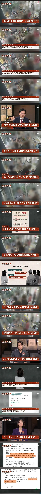

3대가 저러는것도 진짜 ㅋㅋㅋㅋ
저 많은 인원중에 저걸 지적하는 사람이 없었다는게 더 충격이다 진짜 ㅋㅋㅋㅋㅋㅋ

3대가 저러는것도 진짜 ㅋㅋㅋㅋ
저 많은 인원중에 저걸 지적하는 사람이 없었다는게 더 충격이다 진짜 ㅋㅋㅋㅋㅋㅋ
어떤 병신같은 삶을 산걸까?
베트남에 어울리는 새끼들이네
그냥 집에서 드십쇼
콩콩팥팥 레전드 집안이네 진짜 ㅋㅋㅋㅋㅋㅋㅋㅋㅋㅋㅋㅋ
민도 수준 바닥인 애들의 비율이 아직 높다
뭔 개 쌍놈들이ㅋㅋㅋㅋㅋㅋ진짜 거지패밀리네
진짜 거지새끼 집안이네 ㅋㅋ
지금 사태를 고깃집으로 비유하면 고깃집에 자주 가는 단골이 사실은 밖에서 고깃집 시세보다 싸게 고기를 사들고 와서 고깃집 불판에 대리로 구워 먹고 정작 식당에는 공깃밥 값만 지불하던 진상손님이었는데 이제 고깃집에서 대리로 못 구워 먹게 하니까 고기 맛이 떨어져서 진상손님이 가게 안에 다른 사람들에게 화를 내며 왜 너네만 맛있는 고기 먹냐 나 이제 이 집에서 고기 안 사 먹는다고 선언한 상황인 거지?
우우우 쌀쌀쌀
아 좋은비유네용
레전드 집안이네 ㅋㅋㅋ
저런애들이 원가 따지면서 어쩌고저쩌고 입존나텀
레전드 집안 ㅋㅋㅋㅋ
ㅋㅋㅋㅋ
옛날에 삼대를 멸한 이유를 알수있네 ㄹㅇ
대단한 새끼들이네 ㅋㅋㅋㅋㅋㅋㅋㅋㅋㅋㅋ
저런 건 그냥 모자이크 하지 않고 송출해버리지 ㅋㅋ
그지새낀가
이거 쌀숭이 식당비유에서 봤는데
저런 새끼들 아직도 많음
대처까지.. 근래에 본 상놈집안 중 1위임
개종자집안임? 호적을 베트남에서 구매했나